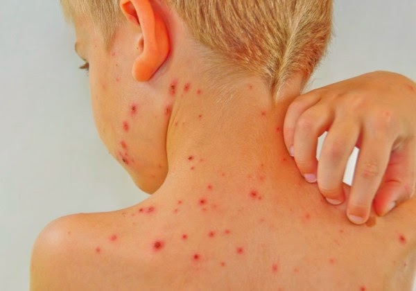

Chickenpox
Chickenpox (varicella) is a viral illness characterised by a very itchy red rash, and is one of the most common infectious diseases of childhood. It is usually mild in children but there is a risk of serious complications, such as bacterial pneumonia.
What causes chickenpox?
- Chickenpox is caused by the herpes varicella-zoster virus.
- The onset of symptoms is 10 to 21 days after exposure.
- It is spread by droplets from a sneeze or cough, or by contact with the clothing, bed linens or oozing blisters of an infected person.
- The disease is most contagious a day or two before the rash appears and until the rash is completely dry and scabbed over.
What are the symptoms of chickenpox?
- Chickenpox appears as a very itchy rash that spreads from the torso to the neck, face and limbs.
- Lasting seven to 10 days, the rash progresses from red bumps to fluid-filled blisters (vesicles) that drain and scab over.
- Vesicles may also appear in the mouth, on the scalp, around the eyes or on the genitals, and can be very painful.
What are the treatments for chickenpox?
- Chickenpox is extremely contagious.Most cases of chickenpox require little or no treatment beyond treating the symptoms.
- The Doctor may recommend over-the-counter painkillers and an antihistamine to relieve pain, itching and swelling.
- Antibiotics are called for if a secondary bacterial skin infection arises or if the person with chickenpox develops bacterial pneumonia.